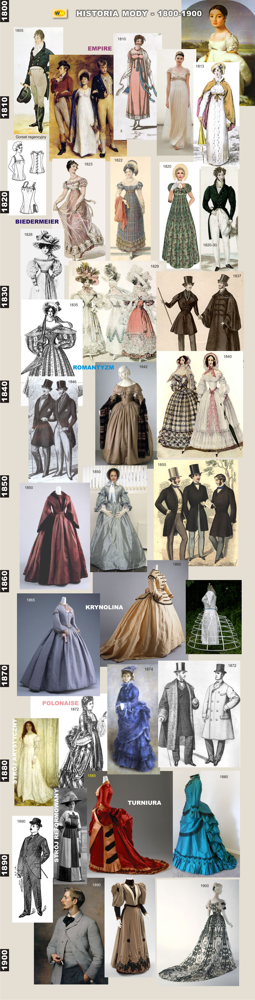

Stroje

- Styl Empire: wysokie suknie u kobiet, fraki i kamizelki u mężczyzn.
- Empire-Stil: hohe Kleider für Frauen, Fracks und Westen für Männer.
- Kobiety w sukienkach o wysokiej talii, mężczyźni w długich frakach i kapeluszach.
- Frauen in Kleidern mit hoher Taille, Männer in langen Fracks und Hüten.
- Rozpoczęcie noszenia szerokich rękawów u kobiet, mężczyźni w bardziej eleganckich garniturach.
- Frauen beginnen, weite Ärmel zu tragen, Männer in eleganteren Anzügen.
- Wzrost popularności gorsetów i szerokich sukni u kobiet, marynarki i kamizelki u mężczyzn.
- Wachstum der Beliebtheit von Korsetts und weiten Röcken bei Frauen, Jacken und Westen bei Männern.
- Suknie z większą ilością materiału, gorsety mocniej modelujące sylwetkę, długie płaszcze u mężczyzn.
- Kleider mit mehr Material, Korsetts, die die Figur stärker betonen, lange Mäntel bei Männern.
- Suknie o większej objętości, w męskiej modzie klasyczne żakiety i fraki.
- Kleider mit größerem Volumen, klassische Jacken und Fracks in der Männermode.
- Kobiety zaczynają nosić suknie z krynoliną, mężczyźni preferują żakiety i wąskie spodnie.
- Frauen tragen Kleider mit Crinoline, Männer bevorzugen Jacken und enge Hosen.
- Wzrost popularności formalnych strojów u mężczyzn, kobiety noszą szerokie suknie z trenem.
- Zunahme der Beliebtheit von formellen Anzügen bei Männern, Frauen tragen weite Kleider mit Schleppe.
- U kobiet suknie z wąską talią, kobiece kapelusze w modzie, u mężczyzn klasyczne garnitury.
- Frauen in Kleidern mit schmaler Taille, Damenhüte sind in Mode, Männer in klassischen Anzügen.
- Kobiety w sukniach z dużą ilością materiału i długimi trenami, mężczyźni w eleganckich garniturach z krawatami.
- Frauen in Kleidern mit viel Material und langen Schleppen, Männer in eleganten Anzügen mit Krawatten.
- Kobiety: suknie z falbanami, koronkami, długie rękawy, kapelusze; Mężczyźni: eleganckie garnitury, szerokie kołnierze, cylindry.
- Frauen: Kleider mit Rüschen, Spitze, langen Ärmeln, Hüte; Männer: elegante Anzüge, breite Kragen, Zylinder.
Krzysztof Marszalec 3F